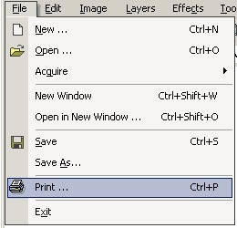
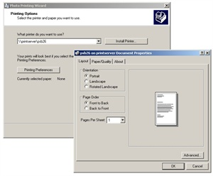
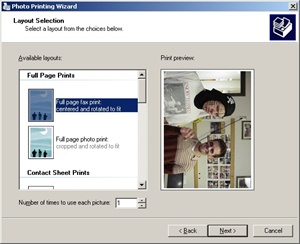
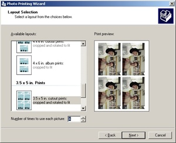

Print Operation
|
 Printing is very simple in Paint.NET. Once you click on the print operation (File-->Print), you will be introduced to the Windows Print Wizard which will guide you through the entire process. |
|
 Notice that setting up the printer is a breeze with the Windows Print Wizard. |
|
 This is the final step to using the Print Wizard. All you have to do is select the layout of the printing. This is easily done by selecting one of the pre-determined layouts in the Available layouts window. In this example, the 'Full page fax print' has been selected. Don't forget, you can also select the total amount of images per sheet. In the example to the left, the default of 1 was used.
|
|
 In this last illustration, a setting of 4 was used with the '3.5 x 5 in. cutout' layout. |